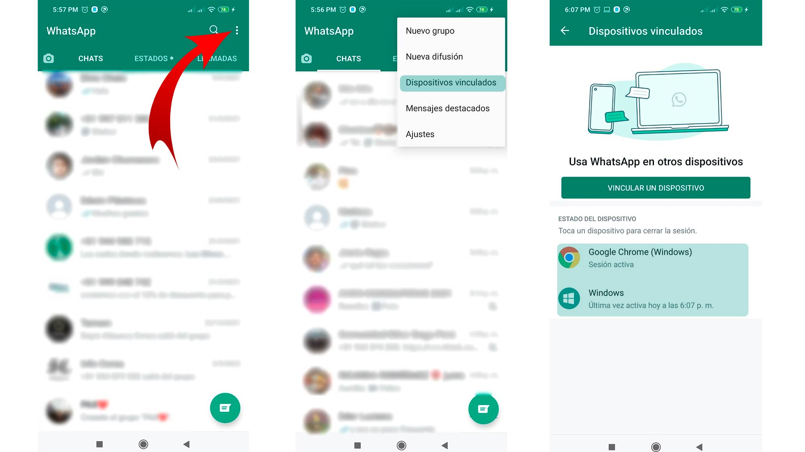

Nuestro bot envía mensajes a cualquier número registrado en WhatsApp. Utiliza un temporizador para realizar
los envíos, el cual puede variar entre 5 segundos y un máximo de 10
minutos.
Esto se hace para evitar que WhatsApp bloquee el envío, ya que si se mandan muchos mensajes en un corto
período de tiempo, pueden ser considerados como spam.
Usted puede enviar un máximo de 100 palabras por mensaje a hasta 100
números. Este límite podrá ampliarse en futuras versiones. Actualmente, solo se permite el
envío de texto en esta primera versión de lanzamiento.
Le solicitamos que cree una cuenta para poder hacer seguimiento en caso de fallos usando su
ID de usuario y poder reiniciar su sesión si es necesario.
Si no crea una cuenta, no podrá usar la aplicación.
Una vez tenga una cuenta, pasará a la sección de envío de mensajes, donde podrá enviar mensajes a sus
contactos de WhatsApp. Puede usar todas las formas de comunicación que ofrece WhatsApp, como texto, emojis,
etc.
El bot también incluye una serie de mensajes predefinidos, como saludos y despedidas.
Además, se utilizan sinónimos para evitar que los mensajes se vean repetitivos o iguales.
Una vez presione el botón Enviar, el bot le mostrará un código QR que debe
escanear desde su WhatsApp, usando la opción de Vincular dispositivo.
Si no sabe cómo hacerlo, a continuación le explicamos:
¿Cómo vincular su dispositivo?

¡Y listo! Los mensajes comenzarán a enviarse. Le solicitamos que no cierre la ventana del
bot mientras se realiza el envío, ya que, si lo hace, el proceso se interrumpirá y tendrá que volver a
iniciar sesión.
Mientras se envían los mensajes, el bot mostrará un contador que indica cuándo se tomará
una pausa. Cuando el contador llegue a 0, el bot continuará con el envío.
Una vez finalice el envío, será redirigido a una página con un resumen de los mensajes enviados y
los que fallaron.
Recuerde: La finalidad de este bot es enviar mensajes a los contactos que ya tiene
guardados en su WhatsApp.
Si usted decide enviar mensajes a números que no tiene en su lista de contactos, corre el riesgo de que su
cuenta sea penalizada por WhatsApp.